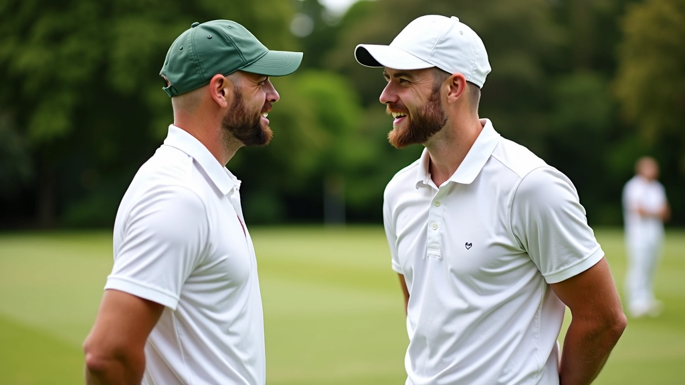
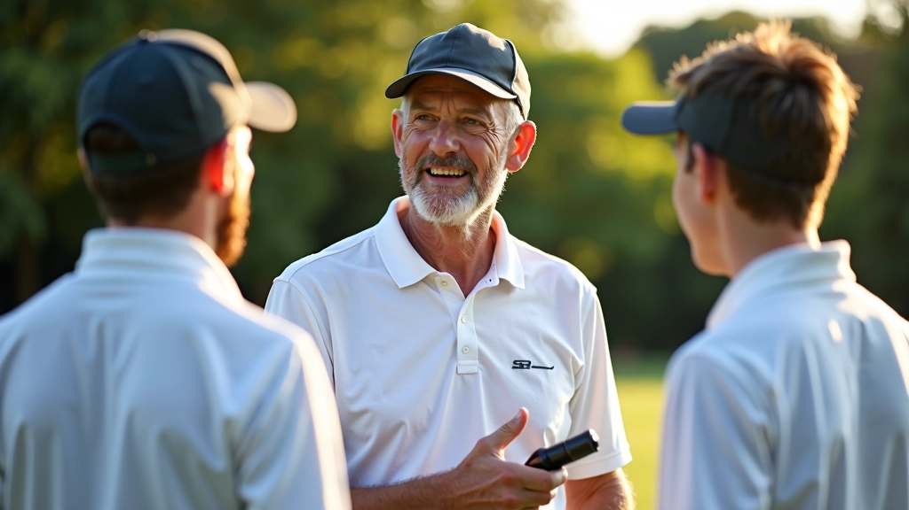
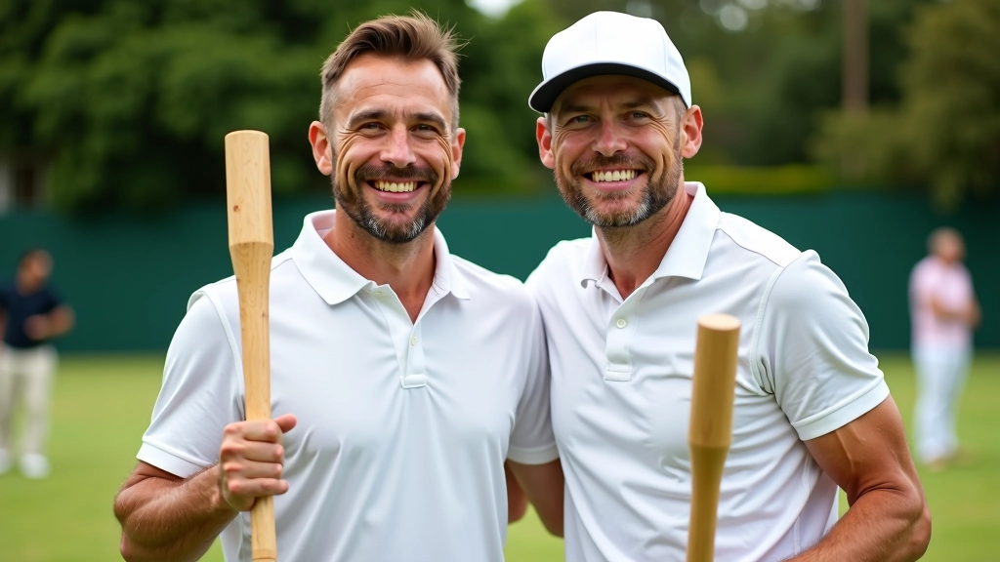

ما هي أساس الثقة في الشراكة؟
الثقة ليست شيء يأتي بين عشية وضحاها. هي تُبنى تدريجياً من خلال التفاني والمسؤولية المتبادلة. في الكروكيه الثنائي، لا يمكنك الفوز إذا كنت تشك في قرارات شريكك أو تخاف من أن يتركك وحدك في المواقف الحرجة. الثقة الحقيقية تعني أنك تعرف أن شريكك سيعطي كل ما لديه، بغض النظر عن النتيجة.
أفضل الشراكات لا تُبنى على الفوز فقط. تُبنى على الصدق والالتزام. عندما تثق في شريكك، أنت لا تهدر الطاقة على القلق من الأخطاء. بدلاً من ذلك، تركز على اللعب وتدعم بعضكما البعض.


البداية الصحيحة: الاتفاق على الأساسيات
قبل أن تتوقع ثقة عميقة، عليك أن تتفق مع شريكك على الأشياء الأساسية. ما هو أسلوب لعبك؟ كيف تتخذ القرارات؟ ما الذي يزعجك أثناء اللعب؟ هذه المحادثات قد تبدو مملة، لكنها أساسية. نحن لا نتحدث عن خطة لعب معقدة هنا. نحن نتحدث عن فهم شريكك كشخص.
خذ وقتاً لتلعب مباريات تدريبية معاً. لا تتوقع أن تفهم بعضكما بعد جلسة واحدة. أفضل الشراكات تحتاج إلى 15-20 ساعة لعب على الأقل قبل أن تشعر بالراحة الحقيقية. في هذه الفترة، ستتعلم كيف يرد فعل شريكك على الضغط، وكيف يحب أن يتلقى التوجيه، وما الذي يحفزه.
ملاحظة مهمة
هذا المقال يقدم إرشادات عملية بناءً على تجارب لاعبي الكروكيه. كل شراكة فريدة، وما ينجح مع شريك قد لا ينجح مع آخر. استخدم هذه النصائح كنقطة انطلاق، وتذكر أن بناء الثقة عملية شخصية جداً تختلف من فريق لآخر.
التعامل مع الأخطاء والإخفاقات
كل لاعب يخطئ. كل لاعب يفشل في لحظات حرجة. هذا جزء من اللعبة. لكن الفرق بين الشراكات القوية والضعيفة هو كيف تتعاملان مع هذه اللحظات. إذا كنت تلوم شريكك أو تظهر الاستياء بعد خطأ، فأنت تقول له "لا أثق بك". هذا يضعف الثقة بسرعة.
بدلاً من ذلك، تقبل الخطأ معاً. قل شيئاً بسيطاً: "لا بأس، سنصلحها في المرة القادمة". هذا يخبر شريكك أنك معه، ليس ضده. سيلعب بثقة أكبر إذا شعر أنك تدعمه حتى عندما يخطئ.
نصائح للتعامل مع الأخطاء:
- خذ نفساً عميقاً قبل أن تقول أي شيء
- ركز على الحل، ليس على من الذي أخطأ
- تحدث بهدوء — لا تصرخ على الملعب
- تذكر أن الأخطاء تحدث للجميع
- تابع مع شريكك بعد المباراة إذا لزم الأمر

بناء التاريخ المشترك
كلما لعبت مع شريكك أكثر، كلما فهمت بعضكما أفضل. ستتعلم قراءة لغة جسده. ستعرف متى يحتاج إلى كلمة تشجيع ومتى يحتاج إلى صمت. ستعرف كيف يتخذ القرارات تحت الضغط. هذا التاريخ المشترك هو أقوى أساس للثقة.
عندما تمرون بأوقات صعبة معاً — خسائر قاسية، ضغط شديد، مواقف محرجة — تصبحان أقرب. لا تخجل من هذه اللحظات. هي تقويك معاً. بعد عام من اللعب المستمر مع نفس الشريك، ستشعر بفرق حقيقي في مستوى تفاهمكما.
الخلاصة: الثقة رحلة، ليست وجهة
بناء الثقة مع شريك الكروكيه لا يحدث بين عشية وضحاها. إنها عملية تدريجية تتطلب التفاني والصبر والالتزام. تبدأ بفهم بعضكما البعض، وتنمو من خلال اللعب المنتظم والدعم المتبادل. عندما تثق في شريكك حقاً، تتغير طريقة لعبك بالكامل. لا تقلق من الأخطاء. لا تخاف من المواقف الصعبة. بدلاً من ذلك، تركز على اللعب الجيد معاً.
ابدأ اليوم. التقط شريكاً واستثمر الوقت في معرفة كيف يعمل. اتفقا على الأساسيات. العبا معاً بانتظام. تقبلا الأخطاء. احتفلا بالفوز. مع الوقت، ستبنيان شراكة لا تهتز، وستشعران بالفرق على الملعب.
هل تريد معرفة المزيد عن التواصل الفعال مع شريكك؟
اقرأ المزيد عن أنظمة الإشارات